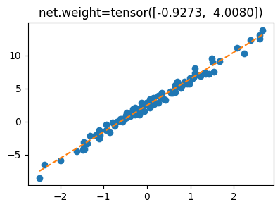
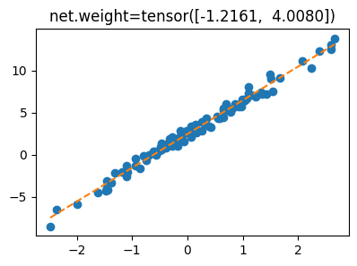
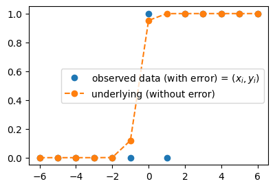

import torch
import matplotlib.pyplot as plt 03wk-1: 파이토치식 코딩패턴 (2), 로지스틱 모형

1. 강의영상
2. Imports
plt.rcParams['figure.figsize'] = (4.5, 3.0)3. 파이토치식 코딩패턴 (2)
복습(잔소리)
# 로드맵
# 회귀/로지스틱 -> DNN -> CNN
# 파이토치식 코딩패턴: step1~4
# step1: 도메인전문가,통계 step2 통계 step3 컴공 step4 산공
# 모델링(비통계): X--> y 가는 패턴을 찾는거다.. // 추세선찾는것
# 관측자료 (x,y) -- with error
# 추세선(underlying) -- (x,yhat=X@W) with out error
# 모델링: 에러가포함된 자료에서 error-free 한 structure를 찾는것
# 모델링의 철칙: error-free 한 structure를 찾으려고 노력해야지.. error를 따라가려고 노력하면 X
# 오차: error-free한 스트럭쳐(모델)이랑 실제관측데이터의 갭이 있는데, 이 갭을 설명해주는 역할을 함 데이터
torch.manual_seed(43052)
x,_ = torch.randn(100).sort()
eps = torch.randn(100)*0.5
X = torch.stack([torch.ones(100),x],axis=1)
W = torch.tensor([[2.5],[4.0]])
y = X@W + eps.reshape(100,1)
x = X[:,[1]]A. bias의 사용
net에서 bias를 사용
# step1을 위한 사전준비
net = torch.nn.Linear(
in_features=1,
out_features=1,
bias=True
) # net(x) = x@net.weight.T + net.bias
net.bias.data = torch.tensor([-5.0])
net.weight.data = torch.tensor([[10.0]])
# step2를 위한 사전준비
loss_fn = torch.nn.MSELoss()
# step4를 위한 사전준비
optimizr = torch.optim.SGD(net.parameters(),lr=0.1)
for epoc in range(30):
# step1: yhat
yhat = net(x)
# step2: loss
loss = loss_fn(yhat,y)
# step3: 미분
loss.backward()
# step4: update
optimizr.step()
optimizr.zero_grad()net.bias.data, net.weight.data(tensor([2.4290]), tensor([[4.0144]]))#
B. 잘못된(?) 코드
# step1을 위한 사전준비
net = torch.nn.Linear(
in_features=2,
out_features=1,
)
net.weight.data = torch.tensor([[-5.0, 10.0]])
# step2를 위한 사전준비
loss_fn = torch.nn.MSELoss()
# step4를 위한 사전준비
optimizr = torch.optim.SGD(net.parameters(),lr=0.1)
for epoc in range(30):
# step1: yhat
yhat = net(X)
# step2: loss
loss = loss_fn(yhat,y)
# step3: 미분
loss.backward()
# step4: update
optimizr.step()
optimizr.zero_grad()- 결과시각화
plt.plot(x,y,'o')
plt.plot(x,yhat.data,'--')
plt.title(f'net.weight={net.weight.data.reshape(-1)}');
- 나쁘지 않은 이유?
# step1을 위한 사전준비
net = torch.nn.Linear(
in_features=2,
out_features=1,
)
yhat = net(X) = X@net.weight.T + net.biasnet.weightParameter containing:
tensor([[-1.0241, 4.0080]], requires_grad=True)net.biasParameter containing:
tensor([3.4689], requires_grad=True)4. 로지스틱 모형
A. \(\hat{\bf y} = ??\)
- \({\bf X}\)를 가지고 \({\bf y}\)를 맞추는 아래와 같은 문제
x = torch.tensor([-6,-5,-4,-3,-2,-1, 0, 1, 2, 3, 4, 5, 6.0]).reshape(-1,1)
y = torch.tensor([ 0, 0, 0, 0, 0, 0, 1, 0, 1, 1, 1, 1, 1]).reshape(-1,1)
plt.plot(x,y,'o')
- 아래와 같이 모형화 하면?
plt.plot(x,y,'o', label=r"observed data (with error) = $(x_i,y_i)$")
plt.plot(x,torch.exp(x)/(1+torch.exp(x)),'o--', label = "underlying (without error)")
plt.legend()
B. \(\hat{\bf y} = \frac{\exp(\text{linr}({\bf X}))}{1+\exp(\text{linr}({\bf X}))}\)
- 걱정: 산점도가 꼭 아래와 같은 방식이 아니라면 어쩌지?
plt.plot(x,y,'o')
- \(x\)가 증가할수록 \(y\)가 0이 된다면?
- 0근처에서 변화가 일어나지 않고 2근처에서 변화가 일어난다면?
- 변화가 좀 더 급하게 (혹은 완만하게 일어난다면?)
plt.plot(x,y,'o', label=r"observed data (with error) = $(x_i,y_i)$")
plt.plot(x,torch.exp(5*x+3)/(1+torch.exp(5*x+3)),'o--', label = "underlying (without error)")
plt.legend()
- 걱정해결
#plt.plot(x,y,'o', label=r"observed data (with error) = $(x_i,y_i)$")
plt.plot(x,torch.exp(x)/(1+torch.exp(x)),'o--', label = "underlying type1 (without error)", color="C1")
plt.plot(x,torch.exp(5*x)/(1+torch.exp(5*x)),'o--', label = "underlying type2 (without error)", color="C2")
plt.legend()
Note
회귀 vs 로지스틱
- \({\bf X} \to {\bf y}\) 에 대한 패턴이 \(\text{linr}({\bf X}) \approx {\bf y}\) 이라면 회귀!
- \({\bf X} \to {\bf y}\) 에 대한 패턴이 \(\frac{\exp(\text{linr}({\bf X}))}{1+\exp(\text{linr}({\bf X}))} \approx {\bf y}\) 이라면 로지스틱!
C. 로지스틱 모형
- \(x\)가 커질수록 (혹은 작아질수록) \(y=1\)이 잘나오는 모형은 아래와 같이 설계할 수 있음 <— 외우세요!!!
\(y_i \sim {\cal B}(\pi_i),\quad\) where \(\pi_i = \frac{\exp(w_0+w_1x_i)}{1+\exp(w_0+w_1x_i)} = \frac{1}{1+\exp(-w_0-w_1x_i)}\)
\(\hat{y}_i= \frac{\exp(\hat{w}_0+\hat{w}_1x_i)}{1+\exp(\hat{w}_0+\hat{w}_1x_i)}=\frac{1}{1+\exp(-\hat{w}_0-\hat{w}_1x_i)}\)
- 회귀모형과 로지스틱 모형의 비교
- 회귀모형: \(y_i \sim {\cal N}(w_0+w_1x_i, \sigma^2)\)1
- 로지스틱: \(y_i \sim {\cal B}\big(\frac{\exp(w_0+w_1x_i)}{1+\exp(w_0+w_1x_i)}\big)\)
1 원래는 이렇게 썼었지.. \(y_i = w_0 + w_1x_i + \epsilon_i \quad \epsilon_i \sim {\cal N}(0,\sigma^2)\)
- 우리가 예측하고 싶은것
- 회귀모형: 정규분포의 평균을 예측하고 싶음. 즉 \(w_0+w_1x_i\)를 예측하고 싶음. 예측값으로는 \(\hat{w}_0 + \hat{w}_1x_i\)를 사용!
- 로지스틱: 베르누이의 평균을 예측하고 싶음. 즉 \(\frac{\exp(w_0+w_1x_i)}{1+\exp(w_0+w_1x_i)}\)를 예측하고 싶음. 예측값으로는 \(\frac{\exp(\hat{w}_0+\hat{w}_1x_i)}{1+\exp(\hat{w}_0+\hat{w}_1x_i)}\)를 사용!